소방설비산업기사(전기) (2019-09-21 기출문제)
1과목: 소방원론
1. 알루미늄 분말 화재 시 적응성이 있는 소화약제는?
- 물
- 마른모래
- 포말
- 강화액
(정답률: 85%)

2. 건축물에 화재가 발생할 때 연소확대를 방지하기 위한 계획에 해당되지 않는 것은?
- 수직계획
- 입면계획
- 수평계획
- 용도계획
(정답률: 72%)
3. 화재 발생 시 물을 소화약제로 사용할 수 있는 것은?
- 칼슘카바이드
- 무기 과산화물류
- 마그네슘 분말
- 염소산염류
(정답률: 61%)
4. 할로겐화합물 소화약제로부터 기대할 수 있는 소화작용으로 틀린 것은?
- 부촉매작용
- 냉각작용
- 유화작용
- 질식작용
(정답률: 61%)
5. 부피비로 질소가 65%, 수소가 15%, 이산화탄소가 20%로 혼합된 전압이 760mmHg인 기체가 있다. 이 때 질소의 분압은 약 몇 mmHg인가? (단, 모두 이상기체로 간주한다.)
- 152
- 252
- 394
- 494
(정답률: 52%)
6. 산소와 질소의 혼합물인 공기의 평균 분자량은? (단, 공기는 산소 21vol%, 질소 79vol%로 구성되어 있다고 가정한다.)
- 30.84
- 29.84
- 28.84
- 27.84
(정답률: 70%)
7. 폭발에 대한 설명으로 틀린 것은?
- 보일러 폭발은 화학적 폭발이라 할 수 없다.
- 분무 폭발은 기상 폭발에 속하지 않는다.
- 수증기 폭발은 기상 폭발에 속하지 않는다.
- 화약류 폭발은 화학적 폭발이라 할 수 있다.
(정답률: 63%)
8. 연기의 물리ㆍ화학적인 설명으로 틀린 것은?
- 화재 시 발생하는 연소생성물을 의미한다.
- 연기의 색상은 연소물질에 따라 다양하다.
- 연기는 기체로만 이루어진다.
- 연기의 감광계수가 크면 피난 장애를 일으킨다.
(정답률: 81%)
9. 제1석유류는 어떤 위험물에 속하는가?
- 산화성 액체
- 인화성 액체
- 자기반응성 물질
- 금수성 물질
(정답률: 70%)
10. 물의 물리ㆍ화학적 성질에 대한 설명으로 틀린 것은?
- 수소결합성 물질로서 비점이 높고 비열이 크다.
- 100℃의 액체 물이 100℃의 수증기로 변하면 체적이 약 1600배 증가한다.
- 유류화재에 물을 무상으로 주수하면 질식효과 이외에 유탁액이 생성되어 유화효과가 나타난다.
- 비극성 공유 결합성 물질로 비점이 높다.
(정답률: 62%)
11. 고가의 압력탱크가 필요하지 않아서 대용량의 포 소화설비에 채용되는 것으로 펌프의 토출관에 압입기를 설치하여 포 소화약제 압입용 펌프로 포 소화약제를 압입시켜 혼합하는 방식은?
- 프레셔 프로포셔너 방식(pressure proportioner type)
- 프레셔 사이드 프로포셔너 방식(pressure side proportioner type)
- 펌프 프로포셔너 방식(pump proportioner type)
- 라인 프로포셔너 방식(line proportioner type)
(정답률: 63%)
12. 질식소화방법에 대한 예를 설명한 것으로 옳은 것은?
- 열을 흡수할 수 있는 매체를 화염 속에 투입한다.
- 열용량이 큰 고체물질을 이용하여 소화한다.
- 중질유 화재 시 물을 무상으로 분무한다.
- 가연성기체의 분출화재 시 주 밸브를 닫아서 연료공급을 차단한다.
(정답률: 61%)
13. 건축물 화재 시 플래시오버(flash over)에 영향을 주는 요소가 아닌 것은?
- 내장재료
- 개구율
- 화원의 크기
- 건물의 층수
(정답률: 78%)
14. 제1류 위험물로서 그 성질이 산화성고체인 것은?
- 셀룰로이드류
- 금속분류
- 아염소산염류
- 과염소산
(정답률: 69%)
15. 증기비중을 구하는 식은 다음과 같다. ()안에 들어갈 알맞은 값은?
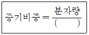
- 15
- 21
- 22.4
- 29
(정답률: 73%)
16. 제4류 위험물 중 제1석유류, 제2석유류, 제3석유류, 제4석유류를 각 품명 별로 구분하는 분류의 기준은?
- 발화점
- 인화점
- 비중
- 연소범위
(정답률: 82%)
17. 전기화재가 발생되는 발화 요인으로 틀린 것은?
- 역률
- 합선
- 누전
- 과전류
(정답률: 84%)
18. 자연발화의 조건으로 틀린 것은?
- 열전도율이 낮을 것
- 발열량이 클 것
- 주의의 온도가 높을 것
- 표면적이 작을 것
(정답률: 72%)
19. 다음 중 가스계 소화약제가 아닌 것은?
- 포 소화약제
- 청정 소화약제
- 이산화탄소 소화약제
- 할로겐화합물 소화약제
(정답률: 65%)
20. 화씨온도 122℉는 섭씨온도로 몇 ℃인가?
- 40
- 50
- 60
- 70
(정답률: 74%)
2과목: 소방전기회로
21. 문자기호화 명칭이 틀린 것은?
- CB:단로기
- ZCT:영상변류기
- MC:전자접촉기
- THR:열동계전기
(정답률: 69%)
22. 그림과 같은 피드백 제어계의 페루프 전달함수는?
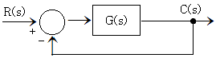
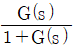
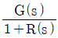
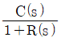
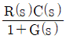
(정답률: 57%)
23. 다음 회로에서 저항 R에 흐르는 전류(A)는? (단, 저항의 단위는 모두 Ω이다.)
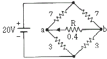
- 2.15
- 1.42
- 0.7
- 0
(정답률: 64%)
24. 2차 전압이 220V인 옥내 변전소에서 스프링클러 설비의 수신반에 전기를 공급하고있다. 스프링클러 수신반의 수전 전압이 216V인 경우 변전소에서 수신반까지의 전압강하율은 약 몇 %인가?
- 1.74
- 1.79
- 1.82
- 1.85
(정답률: 43%)
25. 급수펌프가 교류 3장 평형 Y결선으로 운전되고 있다. 상전압의 크기가 220V, 선전류는 8+j6(A)일 때, 유효전력 P(W)와 무효전력 Q(var)는?
- 2488W, 1866var
- 3048W, 2286var
- 4310W, 3233var
- 5280W, 3960var
(정답률: 46%)
26. 6F와 4F의 커패시터가 직렬로 접속된 회로에 접압 30V를 가했을 때, 6F의 커패시터 단자전압 V1은 몇 V인가?
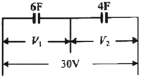
- 10
- 12
- 15
- 18
(정답률: 54%)
27. 직류전압계와 전류계를 사용하여 부하전압과 전류를 측정하고자 할 때 연결 방법으로 옳은 것은?
- 전압계는 부하와 직렬, 전류계는 부하와 병렬
- 전압계는 부하와 병렬, 전류계는 부하와 직렬
- 전압계, 전류계 모두 부하와 병렬
- 전압계, 전류계 모두 부하와 직렬
(정답률: 76%)
28. 다음 논리식 중 성립하지 않는 것은?
- A+A=A
- AㆍA=A
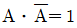
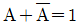
(정답률: 62%)
29. BJT(bipolar junction transisitor)의 베이스에 대한 컬렉터 전류이득 β가 ㆍ80일 때 이미터에 대한 컬렉터 전류이득 α는 약 얼마인가?
- 0.99
- 0.92
- 0.90
- 1
(정답률: 44%)
30. 그림의 회로에서 저항 20Ω에 흐르는 전류는 몇 A인가?
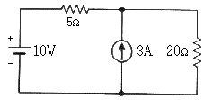
- 0.5
- 1.0
- 1.5
- 2.0
(정답률: 45%)
31. 부저항 특성을 갖는 서미스터의 저항값은 온도가 증가함에 따라 어떻게 변하는가?
- 감소
- 증가
- 증가하다가 감소
- 감소하다가 증가
(정답률: 68%)
32. 동선의 길이는 2배로, 전선의 단면적은 1/2로 되었다. 이 때 저항은 처음의 몇 배가 되는가? (단, 체적은 일정하다.)
- 2배
- 4배
- 8배
- 16배
(정답률: 74%)
33. 전달함수
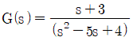
에 대한 특성방정식의 근은?- 1, 4
- -1, -4
- 1, 5
- -1, -5
(정답률: 50%)
34. 0.1H인 코일의 리액턴스가 377Ω일 때 주파수(Hz)는?
- 100
- 200
- 400
- 600
(정답률: 52%)
35. 두 전하 사이에 작용하는 힘을 정전력이라고 한다. 이 정전력이 두 전하(전기량)의 곱에 비례하고 거리의 제곱에 반비례하는 성질을 무슨 법칙이라고 하는가?
- 패러데이의 법칙
- 키르히호프의 법칙
- 쿨룽의 법칙
- 가우스 법칙
(정답률: 63%)
36. 목표값이 시간적으로 변화하지 않고 일정한 값을 유지하는 경우의 제어를 무슨 제어라고 하는가?
- 추종제어
- 정치제어
- 비율제어
- 시퀀스제어
(정답률: 66%)
37. 정전용량이 500μF인 콘덴서 220V의 전압을 인가한 경우, 정전에너지는 약 몇 J인가?
- 12
- 24
- 36
- 48
(정답률: 45%)
38. 제어시스템에서 제어요소는 다음 중 어느 것으로 구성되는가?
- 검출부와 조작부
- 조작부와 조절부
- 검출부와 조절부
- 명령부와 검출부
(정답률: 66%)
39. 전류에 의한 자계의 방향을 결정하는 법칙은?
- 암페어의 오른나사 법칙
- 플레밍의 오른손의 법칙
- 비오 사바르 법칙
- 렌츠의 법칙
(정답률: 56%)
40. 논리식 A(A+B)를 간단히 하면?
- A
- B
- AB
- A+B
(정답률: 67%)
3과목: 소방관계법규
41. 특정소방대상물의 건축ㆍ대수선ㆍ용도변경 또는 설치 등을 위한 공사를 시공하는 자가 공사 현장에서 인화성 물품을 취급하는 작업 등 대통령령으로 정하는 작업을 하기 전에 설치하고 유지ㆍ관리해야 하는 임시소방시설의 종류가 아닌 것은? (단, 용접ㆍ용단 등 불꽃을 발생시키거나 화기를 취급하는 작업이다.)
- 간이소화장치
- 비상경보장치
- 자동확산소화기
- 간이피난유도선
(정답률: 58%)
42. 위험물안전관리법령상 위험물 및 지정수량에 대한 기준 중 ()안에 알맞은 것은?
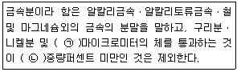
- ㉠ 150, ㉡ 50
- ㉠ 53, ㉡ 50
- ㉠ 50, ㉡ 150
- ㉠ 50, ㉡ 53
(정답률: 61%)
43. 소방기본법상 관계인의 소방활동을 위한하여 정당한 사유 없이 소방대가 현장에 도착할 때까지 사람을 구출하는 조치 또는 불을 끄거나 불이 번지지 아니하도록 하는 조치를 하지 아니한 자에 대한 벌칙으로 옳은 것은?
- 100만원 이하의 벌금
- 200만원 이하의 벌금
- 300만원 이하의 벌금
- 1000만원 이하의 벌금
(정답률: 50%)
44. 화재예방, 소방시설 설치ㆍ유지 및 안전관리에 관한 법령에서 정하는 특정소방대상물의 분류로 틀린 것은?
- 카지노영업소-위락시설
- 박물관-문화 및 집회시설
- 물류터미널-운수시설
- 변전소-업무시설
(정답률: 58%)
45. 위험물안전관리법령상 제조소 또는 일반 취급소의 위험물취급탱크 노즐 또는 맨홀을 신설하는 경우, 노즐 또는 맨홀의 직경이 몇 mm를 초과하는 경우에 변경허가를 받아야 하는가?
- 250
- 300
- 450
- 600
(정답률: 52%)
46. 소방안전관리자의 업무라고 볼 수 없는 것은?
- 소방계획서의 작성 및 시행
- 화재경계지구의 지정
- 자위소방대의 구성ㆍ운영ㆍ교육
- 피난시설, 방화구획 및 방화시설의 유지ㆍ관리
(정답률: 67%)
47. 화재예방, 소방시설 설치ㆍ유지 및 안전관리에 관한 법령상 무창층으로 판정하기 위한 개구부가 갖추어야 할 요건으로 틀린 것은?
- 크기는 반지름 30cm 이상의 원리 내접할 수 있을 것
- 해당 층의 바닥면으로부터 개구부 및 부분까지 높이가 1.2m 이내일 것
- 도로 또는 차량이 진입할 수 있는 빈터를 향할 것
- 화재 시 건축물로부터 쉽게 피난할 수 있도록 창살이나 그 밖의 장애물이 설치되지 아니할 것
(정답률: 61%)
48. 화재예방, 소방시설 설치ㆍ유지 및 안전관리에 관한 법령에서 정하는 소방시설이 아닌 것은?
- 캐비닛형 자동소화장치
- 이산화탄소소화설비
- 가스누설경보기
- 방염성물질
(정답률: 61%)
49. 특정소방대상물의 소방시설 등에 대한 자체점검 기술자격자의 범위에서 ‘행정안전부령으로 정하는 기술자격자’는?
- 소방안전관리자로 선임된 소방설비산업기사
- 소방안전관리자로 선임된 소방설비기사
- 소방안전관리자로 선임된 전기기사
- 소방안전관리자로 선임된 소방시설관리사 및 소방기술사
(정답률: 72%)
50. 소방시설공사업자는 소방시설착공신고서의 중요한 사항이 변경된 경우에는 해당서류를 첨부하여 변경일로부터 며칠 이내에 소방본부장 또는 소방서장에게 신고하여야 하는가?
- 7일
- 15일
- 21일
- 30일
(정답률: 48%)
51. 소방기본법상 소방의 역사와 안전문화를 발전시키고 국민의 안전의식을 높이기 위하여 소방체험관을 설립하여 운영할 수 있는 자는? (단, 소방체험관은 화재 현장에서의 피난 등을 체험할 수 있는 체험관을 말한다.)
- 행정안전부장관
- 소방청장
- 시ㆍ도지사
- 소방본부장
(정답률: 68%)
52. 화재안전기준을 달리 적용하여야 하는 특수한 용도 또는 구조를 가진 특정소방대상물인 원자력발전소, 핵폐기물처리시설에 설치하지 아니할 수 있는 소방시설은?
- 옥내소화전설비 및 소화용수설비
- 연결송수관설비 및 연결살수설비
- 옥내소화전설비 및 자동화재탐지설비
- 스프링클러설비 및 물분무등소화설비
(정답률: 64%)
53. 위험물안전관리법령에서 정하는 제3류 위험물에 해당하는 것은?
- 나트륨
- 염소산염류
- 무기과산화물
- 유기과산화물
(정답률: 65%)
54. 다음 중 1급 소방안전관리대상물이 아닌 것은?
- 연면적 15000m2 이상인 공장
- 층수가 11층 이상인 업무시설
- 지하구
- 가연성 가스를 1000톤 이상 저장ㆍ취급하는 시설
(정답률: 63%)
55. 다음 중 화재경계지구의 지정대상 지역과 가장 거리가 먼 것은?
- 공장지역
- 시장지역
- 목조건물이 밀집한 지역
- 소방용수시설이 없는 지역
(정답률: 51%)
56. 성능위주설계를 할 수 있는 자의 기술인력에 대한 기준으로 옳은 것은?
- 소방기술사 1명 이상
- 소방기술사 2명 이상
- 소방기술사 3명 이상
- 소방기술사 4명 이상
(정답률: 60%)
57. 소방기본법렵상 대통령령으로 정하는 특수가연물의 품명별 수량의 기준으로 옳은 것은?
- 가연성고체류:2m3 이상
- 목재가공품 및 나무부스러기:5m3 이상
- 석탄ㆍ목탄류:3000kg 이상
- 면화류:200kg 이상
(정답률: 66%)
58. 시장지역에서 화재로 오인할 만한 우려가 있는 불을 피우거나 연막 소독을 한 자가 소방본부장 또는 소방서장에게 신고를 하지 아니하여 소방자동차를 출동하게 한 때에 과태료 부과 금액 기준으로 옳은 것은?
- 20만원 이하
- 50만원 이하
- 100만원 이하
- 200만원 이하
(정답률: 60%)
59. 제조소등의 설치허가 또는 변경허가를 받고자 하는 자는 설치허가 또는 변경허가신청서에 행정안전부령으로 정하는 서류를 첨부하여 누구에게 제출하여야 하는가?
- 소방본부장
- 소방서장
- 소방청장
- 시ㆍ도지사
(정답률: 72%)
60. 보일러, 난로, 건조설비, 가스ㆍ전기시설, 그 밖에 화재 발생 우려가 있는 설비 또는 기구 등의 위치ㆍ구조 및 관리와 화재 예방을 위하여 불을 사용할 때 지켜야 하는 사항은 다음 중 어느 것으로 정하는가?
- 대통령령
- 총리령
- 행정안전부령
- 소방청훈령
(정답률: 61%)
4과목: 소방전기시설의 구조 및 원리
61. 비상경보설비 및 단독경보형감지기의 화재안전기준(NFSC 201)에 따른 비상벨설비 또는 자동식사이렌설비 음향장치의 설치 기준이다. 다음 ()에 들어갈 내용으로 옳은 것은? (단, 건전지를 주전원으로 사용하지 않는다.)
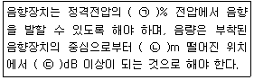
- ㉠ 80, ㉡ 1, ㉢ 90
- ㉠ 110, ㉡ 3, ㉢ 120
- ㉠ 140, ㉡ 1, ㉢ 120
- ㉠ 150, ㉡ 3, ㉢ 90
(정답률: 74%)
62. 물분무소화설비의 화재안전기준(NFSZ 104)에 따른 물분무소화설비의 비상전원을 자가발전설비 또는 축전지설비로 설치하고자 할 때 그 설치 기준으로 틀린 것은?
- 물분무소화설비를 유효하게 30분 이상 작동할 수 있도록 할 것
- 점검에 편리하고 화재 및 침수 등의 재해로 인한 피해를 받을 우려가 없는 곳에 설치할 것
- 비상전원(내연기관의 기동 및 제어용 축전기를 제외)의 설치장소는 다른 장소와 방화구획 할 것
- 사용전원으로부터 전력의 공급이 중단된 때에는 자동으로 비상전원으로부터 전력을 공급받을 수 있도록 할 것
(정답률: 60%)
63. 누전경보기의 화재안전기준(NFSC 2⑤)에 따른 누전경보기의 전원과 관련된 내용으로 틀린 것은?
- 전원은 분전반으로부터 전용회로로 하여야 한다.
- 각 극에 개폐기 및 15A 이하의 과전류차단기를 설치하여야 한다.
- 배선용 차단기에 있어서는 20A 이하의 것으로 각 극을 개폐할 수 있어야 한다.
- 전원을 분기할 때에는 다른 차단기에 따라 전원이 동시에 차단되어야 한다.
(정답률: 68%)
64. 비상방송설비의 화재안전기준(NFSC 202)에 따른 비상방송설비의 설치 기준에 적합하지 않은 것은?
- 비상방송용 확성기를 각 층마다 설치하였다.
- 엘리베이터 내부에는 별도의 음향장치를 설치하였다.
- 음량조정기를 설치하므로 음량조정기의 배선은 2선식으로 하였다.
- 실내에 설치된 비상방송용 확성기의 음성입력을 확인해 보니 2W 이었다.
(정답률: 65%)
65. 무선통신보조설비의 화재안전기준(NFSC 5⑤)에 따른 증폭기의 설치 기준으로 틀린 것은?
- 전원까지의 배선은 전용으로 하여야 한다.
- 전원은 전기가 정상적으로 공급되는 축전지 또는 교류전압 옥내간선으로 하여야 한다.
- 증폭기의 비상전원 용량은 무선통신보조설비를 유효하게 20분 이상 작동시킬 수 있는 것으로 하여야 한다.
- 증폭기의 전면에는 주 회로의 전원이 정상인지의 여부를 표시할 수 있는 표시등 및 전압계를 설치하여야 한다.
(정답률: 66%)
66. 비상조명등의 화재안전기준(NFSC 304)에 따른 휴대용비상조명등의 설치 기준에 적합하지 않은 것은?
- 외함은 난연성능이 있을 것
- 사용 시 자동으로 점등되는 구조일 것
- 어둠 속에서 위치를 확인할 수 있도록 할 것
- 설치높이는 바닥으로부터 0.5m 이상 1.2m 이하의 높이에 설치할 것
(정답률: 69%)
67. 유도등 및 유도표지의 화재안전기준(NFSC 303)에 따른 거실통로유도등의 설치 기준으로 옳은 것은?
- 거실의 출입구에 설치할 것
- 바닥으로부터 높이 1.5m 이상의 위치에 설치할 것
- 구부러진 모퉁이 및 수평거리 10m 마다 설치할 것
- 거실의 통로가 벽체 등으로 구획된 경우에는 비상구유도등을 설치할 것
(정답률: 41%)
68. 자동화재탐지설비 및 시각정보장치의 화재안전기준(NFSC 203)에 따른 청각장애인용 시각경보장치의 설치높이는? (단, 천장의 높이가 2m 초과인 경우이다.)
- 바닥으로부터 0.8m 이상 1.5m 이하
- 바닥으로부터 1.0m 이상 1.5m 이하
- 바닥으로부터 1.5m 이상 2.0m 이하
- 바닥으로부터 2.0m 이상 2.5m 이하
(정답률: 58%)
69. 유도등의 형식승인 및 제품검사의 기술기준에 따라 비상전원의 상태를 감시할 수 있는 장치가 없어도 되는 유도등은?
- 객석유도등
- 계단통로유도등
- 거실통로유도등
- 복도통로유도등
(정답률: 66%)
70. 유도등 및 유도표지의 화재안전기준(NFSC 303)에 따라 피난구유도등을 설치해야 하는 경우는?
- 거실 각 부분으로부터 쉽게 도달할 수 있는 출입구
- 바닥면적이 800m2인 층으로서 옥내로부터 직접 지상으로 통하는 출입구(외부의 식별이 용이한 경우에 한한다.)
- 거실 각 부분에서 하나의 출입구에 이르는 보행거리가 15m 이고 비상조명등과 유도표지가 설치된 거실의 출입구
- 출입구가 4개 있는 거실 각 부분에서 하나의 출입구에 이르는 보행거리가 25m인 주된 출입구 2개소 외의 출입구를 가진 숙박시설
(정답률: 55%)
71. 누전경보기의 형식승인 및 제품검사의 기술기준에 따라 비호환선형 수신부는 신호입력회로에 공칭작동전류치의 42%에 대응하는 변류기의 설계출력전압을 가하는 경우 몇 초 이내에 동작하지 아니해야 하는가?
- 0.2초
- 1초
- 30초
- 60초
(정답률: 47%)
72. 비상방송설비의 화재안전기준(NFSC 202)에 따라 비상방송설비에는 그 설비에 대한 감시상태를 60분간 지속한 후 유효하게 몇 분 이상 경보할 수 있는 축전지설비를 설치하여야 하는가?
- 5
- 10
- 30
- 60
(정답률: 67%)
73. 자동화재속보설비의 화재안전기준(NFSC 204)에 따라 자동화재속보설비는 어떤 설비와 연동으로 작동하여 자동적으로 화재발생 상황을 소방관서에 전달하는가?
- 비상경보설비
- 비상방송설비
- 무선통신보조설비
- 자동화재탐지설비
(정답률: 70%)
74. 비상콘센트설비의 화재안전기준(NFSC 504)에 따라 비상콘센트설비의 비상전원을 실내에 설치할 경우 그 실내에 설치해야 하는 것은?
- 유도등
- 실내조명등
- 비상조명등
- 휴대용비상조명등
(정답률: 63%)
75. 자동화재탐지설비 및 시각경보장치의 화재안전기준(NFSC 203)에 따른 수신기 설치기준에 대한 설명으로 틀린 것은?
- 하나의 경계구역은 하나의 표시등 또는 하나의 문자로 표시되도록 할 것
- 감지기ㆍ중계기 또는 발신기가 작동하는 경계구역을 표시할 수 있는 것으로 할 것
- 음향기구는 그 음량 및 음색이 다른 기기의 소음 등과 명확히 구별될 수 있는 것으로 할 것
- 사람이 상시 근무하는 장소가 없는 경우에는 관계인이 쉽게 접근할 수 없는 장소에 설치할 것
(정답률: 69%)
76. 무선통신보조설비의 화재안전기준(NFSC 5⑤)에 른 무선통신보조설비의 설치 제외 기준이다. 다음 ()에 들어갈 내용으로 옳은 것은?
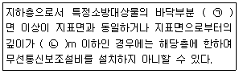
- ㉠ 2, ㉡ 1
- ㉠ 2, ㉡ 3
- ㉠ 3, ㉡ 2
- ㉠ 3, ㉡ 3
(정답률: 67%)
77. 비상경보설비 및 단독경보형감지기의 화재안전기준(NFSC 201)에 따른 발신기에 대한 용어의 정의이다. 다음 ()에 들어갈 내용으로 옳은 것은?
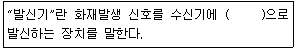
- 수동
- 자동
- 전기적
- 기계적
(정답률: 56%)
78. 자동화재탐지설비 및 시각경보장치의 화재안전기준(NFSC 203)에 따라 부착높이가 15m 이상 20m 미만에 설치할 수 없는 감지기는?
- 연기복합형
- 불꽃감지기
- 이온화식 1종
- 보상식 스포트형
(정답률: 57%)
79. 비상경보설비 및 단독경보형감지기의 화재안전기준(NFSC 201)에 따라 가로 28m 세로 16m 인 어느 특정소방대상물의 구획된 공간에는 단독경보형 감지기를 몇 개 설치하여야 하는가? (단, 내부 구획된 공간은 없으며 벽체의 상부 또는 일부가 개방된 곳이 없는 공간이다.)
- 3개
- 5개
- 7개
- 11개
(정답률: 46%)
80. 비상콘센트설비의 화재안전기준(NFSC 504)에 따라 비상콘센트설비의 전원부와 외함 사이의 절연저항은 몇 MΩ 이상이어야 하는가? (단, 직류 500V 절연저항계로 측정하는 경우이다.)
- 0.2
- 2
- 20
- 200
(정답률: 58%)